San Diego faces a severe homelessness crisis with thousands of affected individuals, yet a massive gap exists in how people access life-saving resources. Current support systems rely heavily on inconsistent word-of-mouth or 2-1-1 referrals that suffer from long wait times and outdated information. For an unhoused individual, the lack of digital access and proper documentation becomes a wall, making it 10 times harder to secure food, healthcare, and shelter compared to the general population. Resource Bridge was designed to tear down this wall by providing a physical, reliable point of access in the heart of the community.
LIVIANNE
/ Resource Bridge
Resource Bridge
Product Design
Our team designed Resource Bridge, a community kiosk system aimed at providing a reliable lifeline for San Diego's unhoused population. We shifted the focus from the typical city kiosk's business directories to a more human-centered platform that offers real-time shelter availability and streamlined appointment scheduling. By integrating features like personalized digital profiles and icon-based navigation, we replaced a cycle of manual, repetitive paperwork with an accessible interface that simplifies the path to essential support.
View the prototypeTeam
Livianne Product Designer
Wendy Product Designer
Stephanie UX Strategist & Project Lead
Tools
Figma
Timeline
February 2025 - April 2025
Problem Statement
Research & Pain Points
Our group conducted extensive research through desk research, competitive analysis, and direct interviews with both unhoused individuals in downtown San Diego and program managers at PATH (People Assisting The Homeless)
- Limitations in Accessing Resources: Interviews revealed limited awareness of available resources, heavy reliance on 2-1-1 and word of mouth, long travel distances, extended wait times, and outdated or inaccurate information online.
- Barriers to Support: Individuals are disadvantaged due to limited digital literacy, language barriers, lack of translations, and the burden of extensive paperwork.
- System Inefficiency: Manual logging processes contribute to long wait times, unclear document requirements, and misinformation. Combined with outdated information and language barriers, these issues often result in wasted trips and missed opportunities for support.
Design Features
After conducting peer reviews, we identified three core features to focus on for our kiosk
- User-Centered Experience: Prioritizes quick access to essential services such as shelter, food, and healthcare. Users can scan a QR code to revisit information later, and clear, step-by-step instructions ensure usability across all literacy levels.
- Efficiency & Accessibility: Filters allow users to sort resources based on their specific needs, supported by a streamlined and intuitive interface for easy navigation. Multilingual support helps reduce language barriers and expands access for diverse communities.
- Real-time Information & Availability Check: The system provides comprehensive, up-to-date listings of shelters and services, along with interactive maps that display locations, distances, and public transportation routes.

User Interviews
With our final set of design features, we created a high-fidelity prototype and conducted in-person interviews at a popular gathering area for unhoused individuals in downtown San Diego
- Patterns Identified: All participants struggled to locate the filter button, frequently mistook information tags for buttons, and clicked the general content box instead of the intended action buttons, with some experiencing responsiveness issues; however, all found the kiosk visually appealing and helpful.
Design Iterations:
- Improve Filter Visibility: Increase the visibility of the filter button to make it easier to discover.
- Clarify Action Labels: Remove "Learn More," as users instinctively clicked the entire card; replace it with "Details" to better indicate interactivity and intent.
- Remove "Learn More": Users clicked the box instinctively; replace it with "Details" for clarity.
Though not directly mentioned in user testing, we felt adjusting these sections would better clarify section differences. Revising the design and layout enhances visual hierarchy, helping users distinguish key information and navigate more intuitively
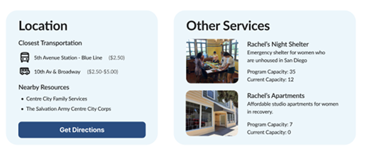
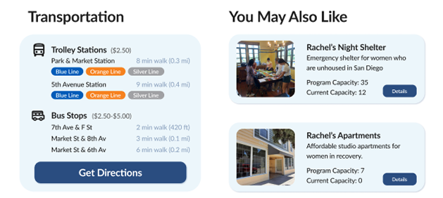
Lessons Learned
Collaboration was the backbone of developing Resource Bridge. Working closely with other designers for the first time was both a challenge and a valuable learning experience. It showed me just how essential teamwork is, not just for dividing tasks, but for pushing ideas further and being able to create something truly impactful.
User testing and feedback was heavily focused on during this project, shaping our final product in ways we hadn't initially anticipated. It truly goes to show that no matter how polished a design may seem, there is always room for iteration and growth, and that individual perspectives can only go so far without real user input.
Interactive Prototype
For the Curious
Beyond the digital design, our team was also tasked with building a physical kiosk prototype as part of our project.
 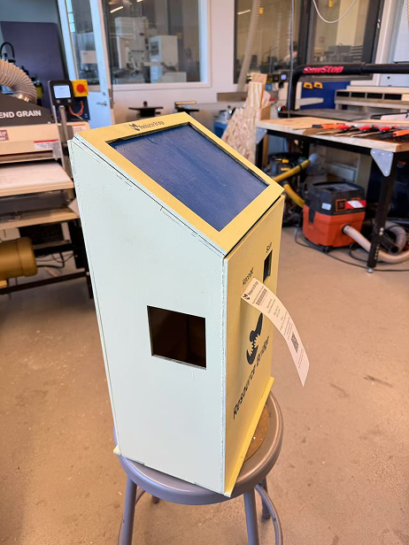
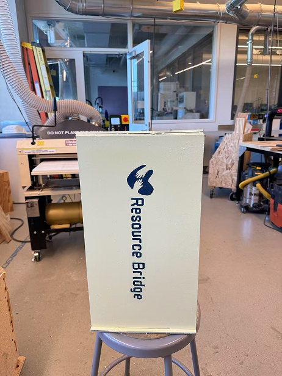
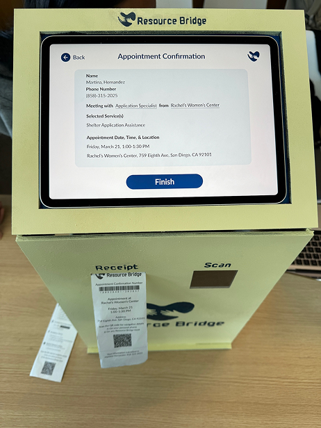
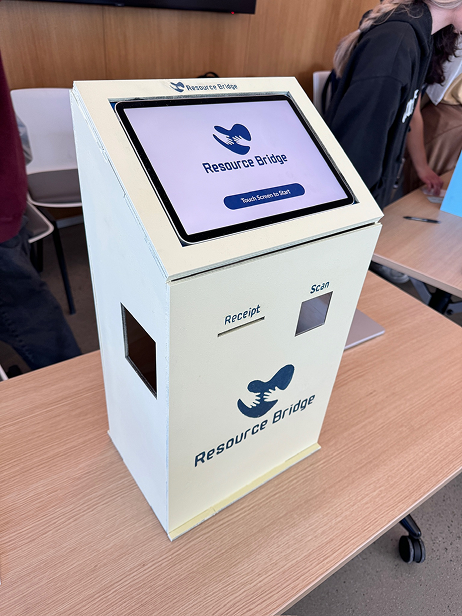
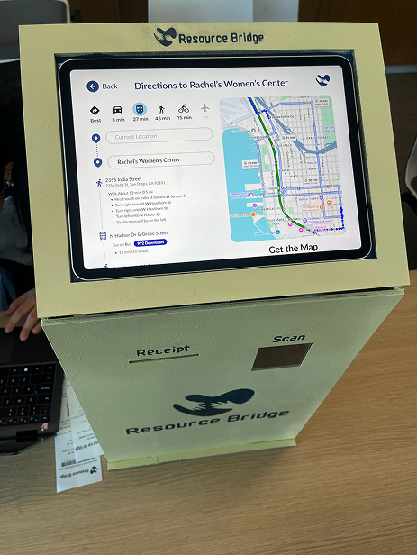
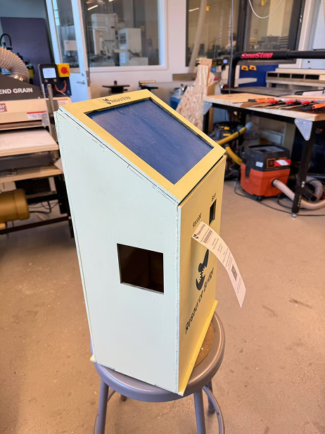
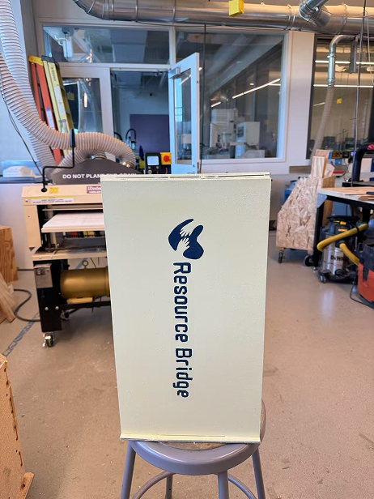
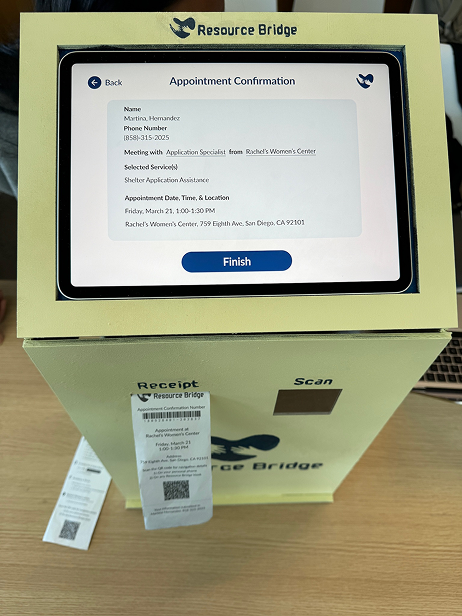
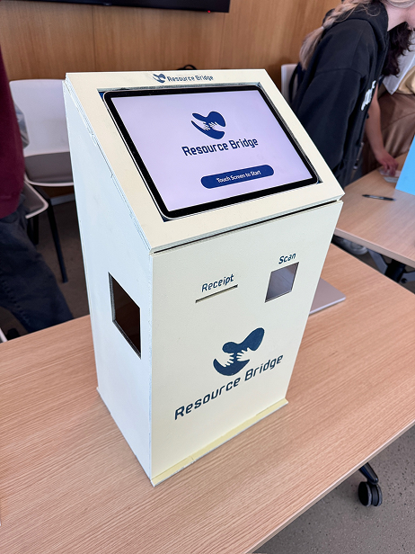
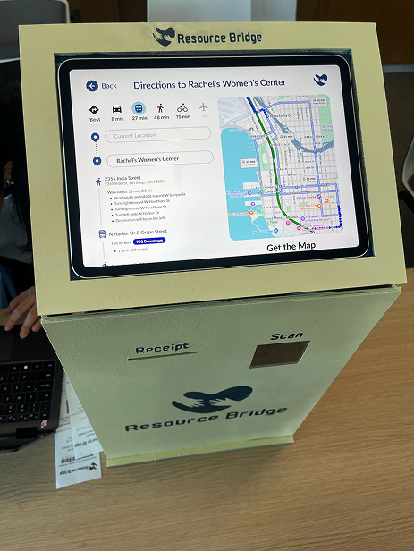